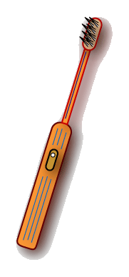

Example of Machine Language
Let us say that an electric toothbrush has
a processor and main memory.
The processor can rotate the bristles left and right,
and can check the on/off switch.
The machine instructions are one byte long,
and correspond to the following machine operations:

| Machine Instruction | Machine Operation |
|---|
| 0000 0000 | Stop |
| 0000 0001 | Rotate bristles left |
| 0000 0010 | Rotate bristles right |
| 0000 0100 | Go back to start of program |
| 0000 1000 | Skip next instruction if switch is off |
Here (let us pretend) is the main memory for the toothbrush system:
The toothbrush is wired so that
when the switch is turned on,
the instructions are performed one at a time, in order,
starting at address zero.
The program can be re-started at address zero with the instruction 0000 0100.
The toothbrush is supposed to rotate the bristles left and right
while the switch is on, and stop when the switch is off.
QUESTION 4:
Fill in main memory starting at address 0 with the machine instructions
to control the toothbrush.
Copy and paste from the list of machine instructions.
(Please take the time to do this.
If you do,
you will be able to tell people that the first program you ever wrote was for an
electric toothbrush.
You do not want to pass up this opportunity).